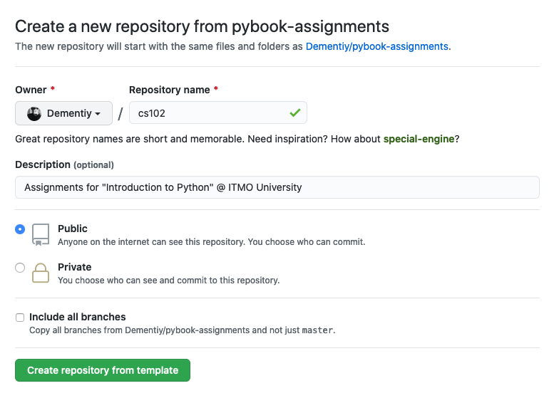
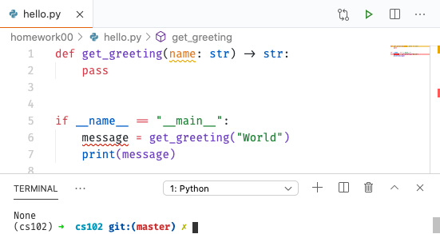

Настройка рабочего окружения
В этой работе мы познакомимся с основными инструментами необходимыми для выполнения практических заданий. Вполне естественно, что время от времени эта работа будет обновляться - появляются новые инструменты, меняется «workflow», так что следите за изменениями и задавайте вопросы, если что-то непонятно.
Установка интерпретатора Python
В первую очередь нам понадобится интерпретатор языка Python1. На операционных системах с ядром Linux (Ubuntu, Fedora и др.) интерпретатор Python скорее всего уже установлен, но его потребуется обновить до более новой версии (текущая стабильная версия 3.8, а в октябре 2020 ожидается 3.9). У пользователей MacOS интерпретатор Python также скорее всего установлен, но в скором времени Apple откажется от предустановленных скриптовых языков. Если интерпретатор не установлен, то вы можете его установить с помощью пакетного менеджера Homebrew. Для пользователей операционной системы Windows есть два пути: скачать интерпретатор с официального сайта или установить из Windows Store. Если вы решили установить Python с официального сайта, то обязательно во время установки выберите пункт добавления пути к интерпретатору в переменную окружения PATH (если по какой-либо причине вы не сделали этого, то обратитесь к официальному руководству).
После установки проверьте версию интерпретатора (она должна быть 3.8 и выше), для этого откройте терминал (командную строку) и выполните следующую команду:
$ python --version
Python 3.8.2
Info
Знак доллара $ обозначает приглашение к вводу команд. В Windows такое приглашение обычно выглядит как символ больше >.
Danger
Если вы работаете с ОС Windows, то вам потребуется установить набор инструментов Git For Windows или WSL. Если вы никогда не работали в командной оболочке, то почитайте UNIX Tutorial for Beginners для знакомства с основными командами.
В какой-то момент вам может потребоваться установить более свежую версию интерпретатора, а возможно, что вы будете работать над несколькими проектами, в которых будут использоваться разные версии. Для этих целей существует менеджер версий pyenv. Для установки на *nix системах можно воспользоваться pyenv-installer (пользователям Windows следует воспользоваться pyenv-win):
$ curl https://pyenv.run | bash
После установки будет предложено добавить несколько строк в ваш .bashrc (это сценарий, который запускается всякий раз, когда начинается новый сеанс терминала в интерактивном режиме) для автоматического обнаружения pyenv:
$ echo 'export PATH="/путь/к/.pyenv/bin:$PATH"' >> ~/.bashrc
$ echo 'eval "$(pyenv init -)"' >> ~/.bashrc
$ echo 'eval "$(pyenv virtualenv-init -)"' >> ~/.bashrc
Info
~ обозначает домашний каталог, например, путь ~/projects эквивалентен пути /home/ваш_пользователь/projects на Linux системах, /Users/ваш_пользователь/projects на MacOS и /c/Users/ваш_пользователь/projects на Windows.
Чтобы изменения вступили в силу, необходимо либо перезапустить терминал, либо выполнить содержимое файла .bashrc в текущем сеансе с помощью команды source:
$ source ~/.bashrc # или . ~/.bashrc
Чтобы просмотреть список версий установленных на вашей системе:
$ pyenv versions
* system (set by /home/dementiy/.pyenv/version)
Чтобы просмотреть список доступных версий интерпретатора:
$ pyenv install --list | grep "^\s+3\.[89]"
3.8.0
3.8-dev
3.8.1
...
3.9-dev
Для установки конкретной версии выполните следующую команду:
$ pyenv install 3.8.5
$ pyenv versions
* system (set by /home/dementiy/.pyenv/version)
3.8.5
Чтобы изменить используемую версию:
$ pyenv global 3.8.5
$ python --version
Python 3.8.5
Для более полного знакомства с менеджером версий pyenv можете почитать эту статью.
Работа с виртуальными окружениями
Для выполнения работ мы будем использовать стандартный модуль venv, появившийся с версии 3.3 и предназначенный для создания и управления изолированными (виртуальными) окружениями. venv позволяет заключить в отдельный каталог необходимые версии python-пакетов и использовать только их. Используя venv, вы можете устанавливать свежие версии пакетов из Python Package Index, при этом не получая проблем с совместимостью версий загруженных пакетов и тех, что уже имеются в системе.
Создадим отдельный каталог ~/.virtualenvs (некоторые редакторы, например, VSCode, по умолчанию полагаются именно на такое название и расположение каталога при поиске доступных интерпретаторов) для виртуальных окружений и новое окружение с именем cs102:
$ mkdir ~/.virtualenvs
$ python -m venv ~/.virtualenvs/cs102
$ which python
~/.pyenv/shims/python
$ source ~/.virtualenvs/cs102/bin/activate
(cs102) $ which python
~/.virtualenvs/cs102/bin/python
(cs102) $ deactivate
$ which python
~/.pyenv/shims/python
Для быстрого переключения на нужное виртуальное окружение рекомендуется добавить следующую функцию в ваш ~/.bashrc (выполните затем команду . ~/.bashrc, чтобы функция стала доступна в текущем сеансе):
function workon() {
if test -z "$1" ; then
echo "Specify the name of the virtual environment"
elif test ! -f "$HOME/.virtualenvs/$1/bin/activate" ; then
echo "Environment doesn't exists"
else
deactivate 2> /dev/null
source "$HOME/.virtualenvs/$1/bin/activate"
fi
}
Для примера в созданном виртуальном окружении установим следующие пакеты: black (для автоматического форматирования кода), isort (для сортировки импортов, т.е., имен подключаемых модулей), mypy (для проверки типов) и pylint (статический анализатор кода для выявления потенциальных проблем):
$ workon cs102
(cs102) $ pip freeze
# Установленных пакетов нет
(cs102) $ python -m pip install black isort mypy pylint
(cs102) $ pip freeze
black==19.10b0
isort==5.4.2
mypy==0.782
pylint==2.5.3
...
В этом примере мы использовали pip для установки новых пакетов. Иногда устанавливаемый пакет требует наличия других пакетов для своей работы, обычно эти пакеты устанавливаются автоматически (говорят «по зависимостям»). Но может возникнуть ситуация, когда вам придется вручную установить нужную библиотеку. Если вы не знаете как это сделать, то поищите ответ на stackoverflow.com, скорее всего кто-то уже столкнулся с той же проблемой, что и вы.
Система контроля версий
Мы будем пользоваться системой контроля версий (что такое контроль версий и зачем он вам нужен можно почитать тут и тут). Все изменения, которые будут происходить с вашими работами, могут храниться локально (у вас на компьютере), а могут и удаленно, так, что вы всегда сможете продолжить работу над своим проектом. Поэтому вам необходимо зарегистрироваться на https://github.com (в качестве альтернативы вы можете рассмотреть https://bitbucket.org).
Info
GitHub предоставляет Github Education Pack для студентов и преподавателей, которые не могут себе позволить использование дорогостоящих подписок на платные сервисы для разработки.
Для всех практических работ вам предоставлены шаблоны и тесты, которые располжены в репозитории курса. На основе репозитория курса вы можете создать свой репозиторий, для этого зарегистрируйтесь на GitHub'е, перейдите на страницу репозитория курса и нажмите на Use this template:

Укажите название и описание репозитория, а затем нажмите на Create repository from template:

По шаблону репозитория курса был создан новый репозиторий, который теперь принадлежит вам. Его необходимо клонировать (создать локальную копию репозитория):
$ git clone https://github.com/Dementiy/cs102.git
Cloning into 'cs102'...
remote: Enumerating objects: 93, done.
remote: Counting objects: 100% (93/93), done.
remote: Compressing objects: 100% (90/90), done.
remote: Total 93 (delta 9), reused 0 (delta 0), pack-reused 0
Unpacking objects: 100% (93/93), done.
$ cd cs102
$ ls
README.md homework01 homework01-go homework02 homework02-go ...
После выполнения команды git clone будет создан каталог с именем cs102. Для быстрого перехода в этот каталог добавим alias в ваш .bashrc, для этого откройте терминал и выполните следующие команды:
$ echo 'alias gocs102="cd /путь/к/каталогу/cs102"' >> ~/.bashrc
$ . ~/.bashrc
$ gocs102
$ pwd
/путь/к/каталогу/cs102
Вам нужно зарегистрировать свой репозиторий у Коннора:
Выбор редактора кода
Вам будет нужен редактор кода. Это может быть «простой» текстовый редактор с подсветкой синтаксиса и дополнительно устанавливаемыми расширениями, например, VSCode, Vim, Atom, SublimeText или же полноценная среда разработки PyCharm. Рекомендуется попробовать разные редакторы (мы рассмотрим настройку VSCode), потратив некоторое время на ознакомление с их возможностями и чтение документации.
Info
Достаточно часто университеты покупают программное обеспечение для своих студентов на время обучения. Например, Университет ИТМО имеет лицензии на все продукты компании JetBrains.
Запустите VSCode, выберите Open Folder и укажите каталог cs102:
После чего на вкладке Explorer появится содержимое шаблонов всех работ:
Создайте в корне новый файл с именем hello.py (для этого можно воспользоваться одним из следующих вариантов: в меню File выбрать пункт New File и затем сохранить файл; щелкнуть по иконке с надписью New File в окне Explorer; щелкнуть правой клавишей мыши в окне Explorer и выбрать New File):
Скопируйте пример скрипта приведенный ниже в созданный файл:
def main() -> None:
print("Hello, World!")
if __name__ == "__main__":
main()
VSCode предложит установить расширение для Python (вы можете установить его самостоятельно, нажав на левой панели на Extensions и в поисковой строке набрав python):
После установки расширения вы сможете запускать и отлаживать код непосредственно в VSCode. Также в репозотирии есть базовые настройки для пакетов, которые вы установили раннее (black, isort, pylint, mypy). Настройки можно найти в файле .vscode/settings.json. В настройках по умолчанию указан шрифт Fira Code, вы можете продолжить использовать его или установить любой другой моноширный шрифт (JetBrains Mono, Iosevka, Anonymous Pro и т.д.).
Для выполнения скрипта нажмите на кнопку Run, результаты работы будут выведены в терминале:

Также рекомендуется добавить команду code для запуска из терминала:

Задание
Откройте файл с именем README.md и добавьте ваши фамилию, имя и номер группы. README.md должен быть в формате Markdown, про который можно почитать тут.
Info
VSCode позволяет открыть предпросмотр файла в формате Markdown.
После редактирования README.md внесенные изменения необходимо зафиксировать и отправить на сервер:
$ git add README.md
$ git commit -m "Обновлено описание репозитория"
$ git push origin master
Все вопросы и замечания пишите в комментариях или в Discord'е.